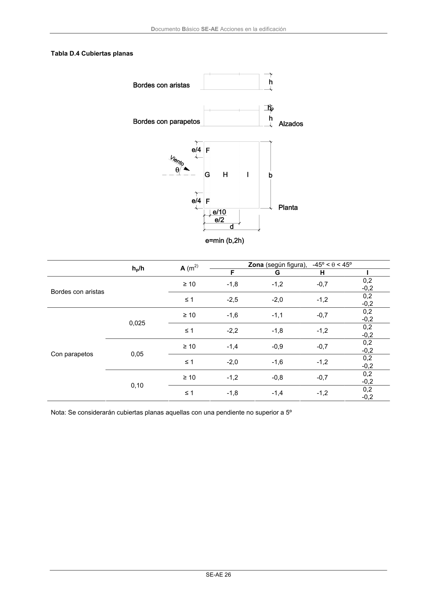

DB-SE-AE · Página 30 · versión 2009-04
SHA256: 26116e5088955f0c6963a6187270cad282e1e7bf5a53a90f695c8fa50b4e4487 · página física 30 de 46 · métodos de encabezado
solo si están cotejados.
Formatos: Markdown · JSON de bloques · PDF p. 30 · imagen PNG
Documento Básico SE-AE Acciones en la edificación SE-AE 26 Tabla D.4 Cubiertas planas Zona (según figura), -45º < θ < 45º hp/h A (m2) F G H I 0,2 ≥ 10 -1,8 -1,2 -0,7 -0,2 0,2 Bordes con aristas ≤ 1 -2,5 -2,0 -1,2 -0,2 0,2 ≥ 10 -1,6 -1,1 -0,7 -0,2 0,2 0,025 ≤ 1 -2,2 -1,8 -1,2 -0,2 0,2 ≥ 10 -1,4 -0,9 -0,7 -0,2 0,2 0,05 ≤ 1 -2,0 -1,6 -1,2 -0,2 0,2 ≥ 10 -1,2 -0,8 -0,7 -0,2 0,2 Con parapetos 0,10 ≤ 1 -1,8 -1,4 -1,2 -0,2 Nota: Se considerarán cubiertas planas aquellas con una pendiente no superior a 5º
